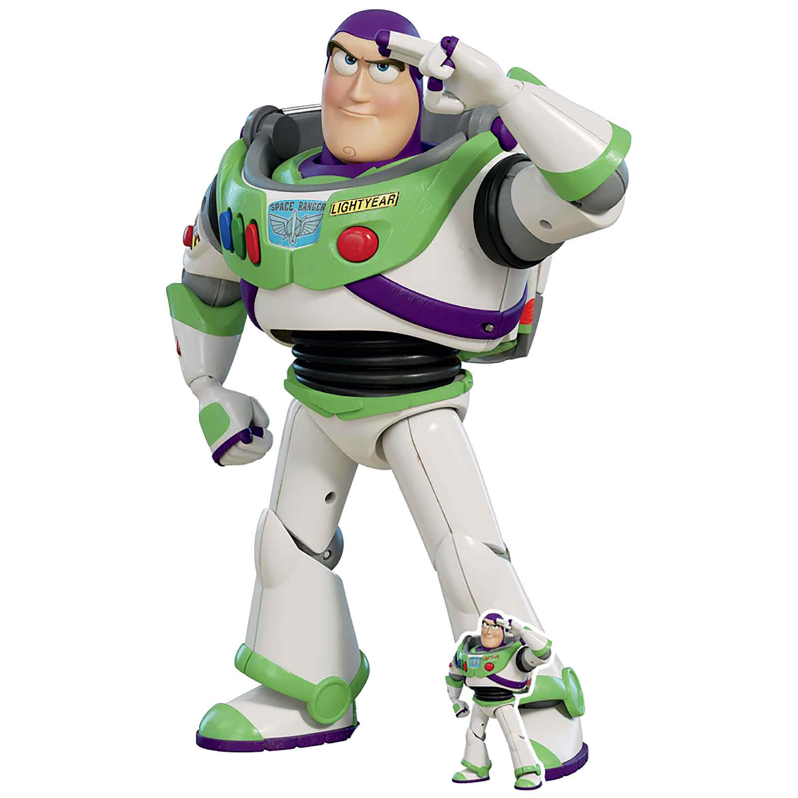

My mother is a teacher at a primary school where she often works with the gifted kids that yearn for an extra challenge. One of the challenges she provided them was called the Boomerang Problem1. The goal of the challenge is to find the largest number that cannot be represented as the sum of multiples of two given numbers (called the boomerangs). So for example, given the number 4 and 5, you can construct 17 as \(3 * 4 + 1 * 5\). However, the number 11 cannot be represented that way. In fact, it turns out to be the largest number for which that holds given boomerangs 4 and 5.
Impressed with the speed with which some kids were able to answer the question she also wanted to test me. And so, after doing a bunch of arithmetic to solve the problem I naturally wanted to find an easier, lazier, and more elegant way to generate an answer.
In this post we will try to formulate a generic method for finding this largest number given any two boomerangs. We do this for entertainment, to aid with sleeping now that one more question in the universe is answered, and unbeknownst to most people: because proving is a creative process. In the final paragraph I will shed a few words on what makes the process so interesting and worthwhile.
Before we try to answer the question of the largest number we must asks ourselves first: does such a number always exist? And in fact, this happens to not always be the case. The easiest counter example that you can think of is when the two boomerangs are even numbers. After all, both the sum and a multiple of even numbers remain even. As a result, two even boomerangs will never be able to express an odd number, making the question "What is the largest number that cannot be expressed?", rather nonsensical.
Even numbers carry with them a property that troubles the water in the same way that 6 and 9 are two boomerangs for which the question becomes nonsensical. Namely, they are both a multiple of a number other than 1. This number is known as the Greatest Common Divider (Or GCD for short). We know that if the GCD of two numbers is some number \(z\), that \(k * z+1\) can never be expressed for the following reason:
What we have learned is that before we start asking the question we first calculate the GCD to check if it is in fact 1. Luckily there is a relatively simple method for determining the GCD which is known as the Euclidean Algorithm2.
While it is not always necessary, usually a proof attempts to verify an already developed idea or hypothesis. Furthermore, it forms a great excuse to include some computer science concepts in the mix regarding solving puzzles algorithmically.
In essence, what we want is a program that given a number z and two boomerangs x and y, will return an a and b that satisfies our puzzle, or tell us that it is impossible of course. Then we will run this program for any number between 1 and say 100000. More than likely, no new solutions will pop up after a while and we can reasonable assume that we have found the highest number. Note that this does not yet constitute a proof, but it can give us a good understanding and new insights that will help us get there eventually.
Now this is the part where we will dive into some computer science, if you are here just for the math, don't worry, it won't affect our proof. The thing is, we want to construct a program that is able to find a solution in a reasonable amount of time. To do this, we will use a concept known as dynamic programming3 (or DP for short). What this method helps us do, is create an efficient algorithm for problems that can be expressed as a sub problem:
$$ T(x,y,0) = True \\ T(x,y,z) = z > 0 \wedge (T(x,y,z-x) \vee T(x,y,z-y)) $$
What this says is that the number z can be expressed if either \(z-x\) or \(z-y\) can be expressed. As base case we also state that the number 0 can always be expressed. In haskell, the mathematical notation translates quite well:
{% call macros.code('haskell') %} test :: Int -> Int -> Int -> Bool test x y z | z < 0 = False | z == 0 = True | otherwise = test x y (z-x) || test x y (z-y) {% endcall %}
However, this implementation can run out of hand quite quickly since it can require up to 2 recursive calls per iteration, meaning that the execution stack grows
exponentially. But this is where the concept of DP kicks in, now that we have stated our problem in terms of the solution to a smaller version we can start to attack
it from the other side, eliminating recursion and ensuring that we never have to calculate something twice. Furthermore, we also save the information needed to actually
reconstruct a and b once we know that the answer has been yes. For this we will employ c++:
{% call macros.code('cpp') %}
#include
Now, let's run this for a number of boomerangs and see what the largest number is for which the program outputs NO ANSWER.
| x | y | largest z |
|---|---|---|
| 4 | 5 | 11 |
| 5 | 6 | 19 |
| 7 | 10 | 53 |
| 28 | 19 | 485 |
Admittedly, it takes either luck or time to spot the pattern, but eventually it can be done. I was sitting in the garden, thinking about what these numbers might mean and where they came from and then it suddenly hit me: the formula for the largest number is as follows. $$ L(x,y) = x * y - x - y $$ It seems we have found a simple and elegant formula that can tell us the answer right away; No programming languages, no sub problems, often not even a calculator is needed. But where does this formula come from? And is it always correct? Perhaps some number in the billions is waiting out there to show our hypothesis is wrong... Clearly, sleep is not yet an option.
If you want to play around yourself with some numbers I've taken that same c++ code and converted it to javascript for you to play with:
Let's first think about how someone might prove such a thing. Our computer program was not a valid proof because we could never evaluate every single number. What we have to come up with is something known as an induction proof. We aren't going to proof that it holds for some number, we are instead going to prove that we can always increment a number by 1 and still express the number of the sum of the two boomerangs. That way, our statement suddenly holds for all numbers to the stars and beyond!
To highlight the rewrite rules we have conjured up in our proof let us walk through an example with 4 and 5 as a boomerangs. We already know now that 11 is the largest number that cannot be expressed, but we can start with the rewrite rule from there.
| z | a | b | elaboration |
|---|---|---|---|
| 11 | - | - | - |
| 12 | 3 | 0 | - |
| 13 | 2 | 1 | \(n*4 \mod 5 = (5-1)\) holds for \(n=1)\) since \(4 \mod 5=4)\). Now we can subtract a by 1 and increment b by \(\frac{4}{5} + 1 = 1\) |
| 14 | 1 | 2 | \(n*4 \mod 5 = (5-1)\) holds for \(n=1)\) since \(4 \mod 5=4)\). Now we can subtract a by 1 and increment b by \(\frac{4}{5} + 1 = 1\) |
| 15 | 0 | 3 | \(n*4 \mod 5 = (5-1)\) holds for \(n=1)\) since \(4 \mod 5=4)\). Now we can subtract a by 1 and increment b by \(\frac{4}{5} + 1 = 1\) |
| 16 | 4 | 0 | \(n*4 \mod 5 = (5-1)\) holds for \(n=1)\) since \(4 \mod 5=4)\). But, \(1 > 0\) so we proceed to rewrite rule 2. \(n*5 \mod 4 = (4-1)\) holds for \(n=3\) since \(15 \mod 4 = 3\). So we decrement b by 3 and increment a by \(\frac{15}{4}+1=4\). |
I don't think proofs like this interest most people and I think for a large part that has to do with not realizing that math is a fundamentally creative process. In school you usually experience a cycle in which the teacher explains a concept, rule, or formula after which you go ahead and apply this newfound knowledge to a number of examples.
While this is of course very necessary to teach everyone the basics of math it often fails to highlight the fact that those rules and concepts were not carved in stone by a deity and gifted to us; Instead we discovered them! And this is were things get ironic since the word discovery implies some sort of unspecified human process, which most people do not associated with a field like math that is often crowned with the virtue of being precise and unambiguous.
In fact, it is precisely because developing new theories in math requires human creativity that it attracts people. Mathematicians don't view themselves as efficient computers, but as creative beings that are almost creating art, albeit under very strict rules.
It is true that computer programs exist that can tell you whether certain conjectures are true or not (SAT solvers for example) but they are currently quite limited. It seems that every time we try to create a magical auto proofer, we stumble upon some missing information that requires creativity to solve.
All this leads to the most existential question in math: 'Is math something you discover or something you create?'